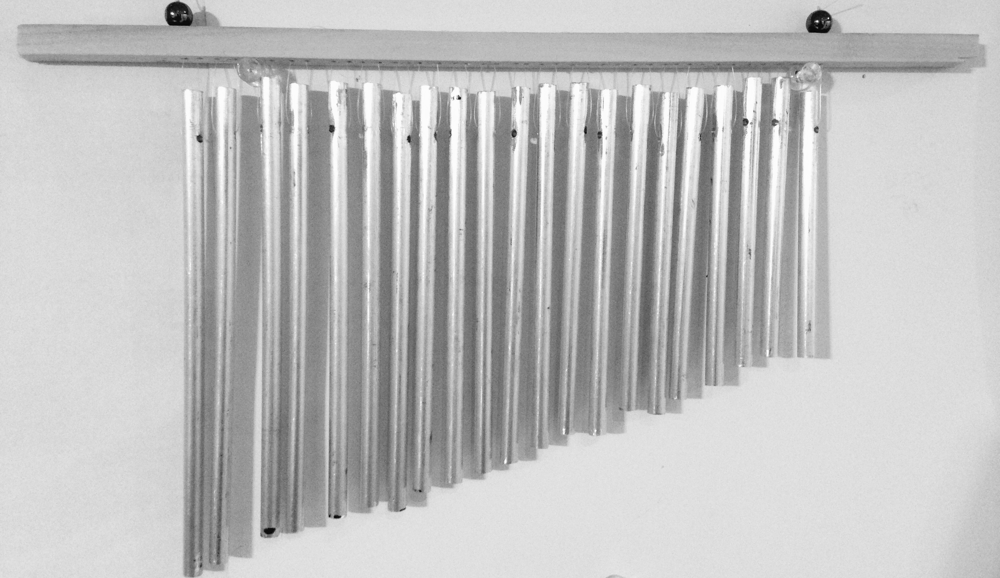
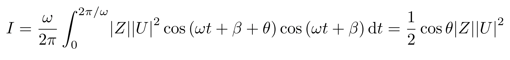
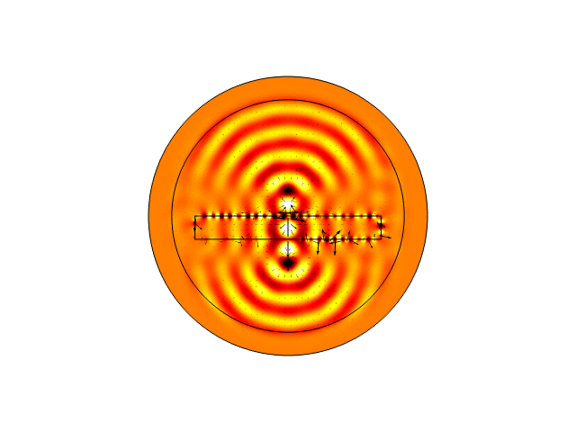

| Home | Acoustics | Physics | Music | Sound Journal | Pictures |
|---|
I am a graduate student in acoustics at the University of Texas at Austin. Below is an ongoing collection of thoughts, musings, and projects on acoustics.
Table of Contents
The angle of intromission is the angle that corresponds to perfect transmission of sound between two media. Its derivation is straightforward but was not discussed in class, so I have shown the steps that lead to David Blackstock's equation (B-14) in section 5.B.2.a.
I began handcrafting wind chimes as a sophomore at UTD. To date, these wind chimes ring across seven states and two continents, encompass over 30 tunings, and span 7 octaves. Please visit this website to learn more about the wind chimes and hear several of the tunings.

This was something I did for fun to better understand the echoic properties of this enchanting natural formation in northern New Mexico.
This is an evaluation of the integral for intensity in David Blackstock's Fundamentals of Physical Acoustics, section 1E-3 (page 50). We use the result all the time, so I thought I should take the integral at least once.

Here I use the calculus of variations to show that arcs of circles minimize the travel time between two points in a medium where the sound speed varies linearly (i.e., the upper ocean).

This finite element model of a negative acoustic lens shows negative refraction and amplification of evanescent waves. The black arrows denote the particle velocity field.
Here is an entertaining practice problem I wrote while studying for my Acoustics I midterm exam. It involves a "Gaussian comb" pressure-amplitude profile. [solution]
Another humerous problem created in preparation for the Acoustics I final. [solution]
I worked with Akash Nivarthi and Ryan Whitney on replicating a Dirac-like cone in an acoustic metamaterial for our fall 2021 course.
These were some questions that came to mind in the first week of grad school. It turns out that d'Alembert, Euler, Bernoulli, and others had contentiously debated these very issues 250 years ago!
Here I derive the pressure reflection and transmission coefficients of the three-medium problem in a way that makes sense to me.
The virial theorem is a well-known result of Hamilton's formulation of classical dynamics that relates the average kinetic energy of a system to its virial. I have never seen it applied to waves on a string, but in Dr. Mark Hamilton's Acoustics I course, we arrived at a special case of the theorem that showed that the kinetic and potential energies are equal for progressive waves on a string. Here, I derive and apply the virial theorem to show the more general result.